01 Basic Concept Of Network Theory
Basic concept of network theory
Network & circuits
Circuit must have a closed Path whereas network may be open or closed
path. Every circuit is a network but every network is not circuit.
Circuit is the subset of network.
●
Consider building to be Network & building’s rooms to be circuit.
Quantity which is responsible for electric phenomenon.
●
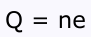
where, n = no. of e or protons q = total charge e = charge on e or protons Fundamental unit: Coulomb (C)
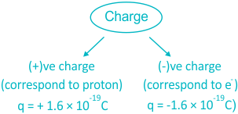
Charge in motion represent a current.
{ } () = 𝑑𝑞(𝑡) 𝑖𝑡 𝑑𝑡
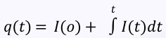
𝑜 Fundamental unit: Ampere (A)
Note:
Electron current flows from negative terminal of source to positive terminal.
Conventional current flows from positive terminal of source to negative
terminal. Conventional current’s direction is opposite to the flow of electron direction.
Electron current is obtained due to the movement of free electrons.
Conventional current is obtained due to the movement of free positive
charges.
Amount of work required to move a charge through the element.
●
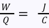
{ } 𝑑𝑞 Where, W is the potential energy (in Joule) Q is the charge (in Coulomb) Electric field intensity is (-) ve potential gradient.
●
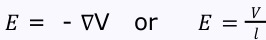
Direction of voltage is always from (-) ve to (+ve).
●
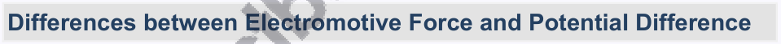
The electromotive force is the cause of the potential difference, whereas
the potential difference is the effect of the potential difference. The magnitude of emf has always remained constant, whereas the
magnitude of the potential difference varies. The electromotive force does not depend on the internal resistance of the
circuit whereas the potential difference is directly proportional to the resistance of the circuit. The electromotive force is represented by the symbol ‘E’ whereas the
symbol ‘V’ represents the potential difference.
Power can be defined as the rate of flow of electrical energy. Mathematically, it can be written as
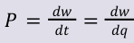
𝑑𝑞. 𝑑𝑞 𝑑𝑡 Or
Instantaneous power:
P (t) = v (t).i (t) Fundamental unit: Watt (W)
Sign convention for power calculation:
●
Points to be Remember:
1 hp = 746 W −3 𝑊
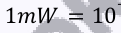
−6 𝑊

−9 𝑊
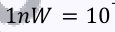
3 𝑊
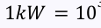
6 𝑊
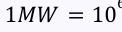
9 𝑊
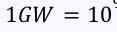
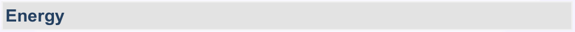
The capacity to do work is known as Energy W = ∫Pdt Fundamental unit: Joule (J) The electric power utility companies measure energy in Watt hours (Wh)
1 Wh = 3600 J

At constant temperature, J ∝ E
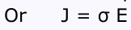
Where, J = Current density (A/m 2) E= Electric Field intensity (V/m)
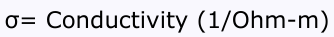
Current flowing through conductor is proportional to the potential difference
between two ends provided external conditions to be constant. i.e., I ∝ V
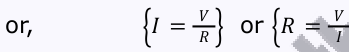
Points to be Remember:
1 is proportional constant.
𝑅

Resistance does not depend upon voltage or current.
Resistance is depend upon the ratio of voltage to the current.
●
Specific resistance is defined as the resistance offered by a unit length and unit cross-section of the substance to a current when a voltage is applied to it. Its SI unit is Ω−m.
{ } ρ = 𝑅𝐴 Ohm – m 𝑙 It depends upon type of material but NOT on dimensions.
Resistance depends upon temperature, along with dimension.
The resistivity of the cube having one-meter side is defined as the resistance
offered between the opposite two phases of the one-meter cube.
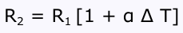
Where, R 2 = Resistance at temperature T 2 R 1 = Resistance at temperature T 1
| T | R | α | |
|---|---|---|---|
| Conductor | ↑ | ↑ | (+)ve temperature coefficient |
| Semiconductor | ↑ | ↓ | (-)ve temperature coefficient |
Reciprocal of resistance is conductance.
{ } 𝐴 1 or mho or Siemens 𝐺= 𝑅 𝑉 Reciprocal of resistivity is conductivity.
●
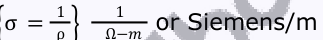
Copper and Aluminum have low resistivity.
Good conductors have less resistivity. Insulators have a high resistivity.
The resistivity of semiconductors lies between conductors and insulators.
Gold is a good conductor of electricity and so it has low resistivity.
●
Applicable only for linear elements.
Temperature must be constant.
●
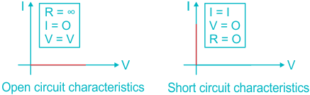
{ } 𝑊𝑏 𝐿= 𝑁ϕ or Henry (H) 𝑖 𝐴 If inductance does not depend upon flux linkage or current, then it is known
as linear inductor otherwise Non-linear inductor. With any change of flow or direction of current, the electromagnetic field
changes. This change of field induces a voltage (V L) across the coil, is given by (Lenz’s law)
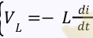
Practical inductance has very low value of resistance.
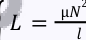
Energy stored in inductor:
2 (𝑡) () = 1 J 𝑤𝑡 2 𝐿 𝑖 The inductor stores the energy in the form of magnetic field.
A pure inductor does not dissipate energy, but only stores it.
●
{ } 𝐶= ϵ𝐴; ϵ: permittivity 𝑑 unit: F/m
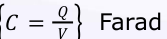
If capacitance does not depend on Q or V then it is Linear capacitor otherwise
Non-linear capacitor.
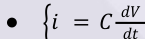
Note:
Reciprocal of capacitance is Elastence.
●
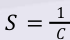
Unit: DARAF Energy stored in capacitor
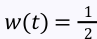
2 (𝑡) 2 𝐶𝑉 The capacitor stores the energy in the form of electric field.
●
| Element | How to identify | Example |
|---|---|---|
| Linear | Characteristic are straight line & passing through origin | R, L, C |
| Non-linear | Otherwise, Non-linear | Diode, charged capacitor |
| Active | Characteristics may have (-)ve slope or combination of both | Voltage, current source, SCR, op-amp |
| Passive | Characteristics does not have (-)ve slope, only (+)ve slope | R, L, C, transformer |
| Bilateral | Having same characteristics in both the direction of current | R, L, C Diac & triac |
| Unilateral | Otherwise, unilateral | Diode, SCR, transistor, op-amp |
| Lumped & distributed | Separation of R, L, C possible is lumped otherwise distributed | Lumped, R, L, C distributed – Transmission line |
Points to be remember:
All the linear elements are bilateral but bilateral element need not to be a
linear. KCL & KVL are not applicable for distributed elements.
Circuit theory is applicable up to high frequency.
At steady state, consider distributed element as lumped element.
●
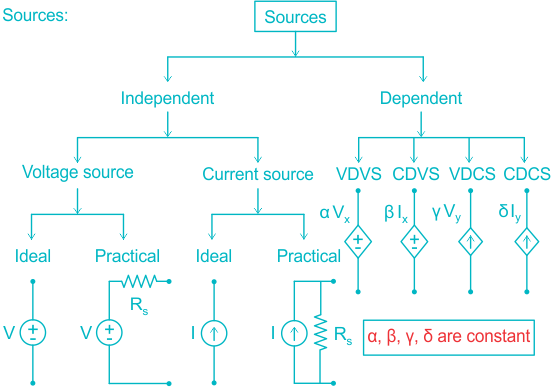
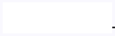
Remember :
Ideal voltage source has zero internal resistance.
Ideal current source has infinite internal resistance.
Dependent sources are useful to represent electrical models for solid state
devices e.g. transistors, op-amp. Don’t connect different ideal voltage sources in parallel.
Don’t connect different ideal current sources in series.
●
| KCL | KVL |
|---|---|
| Algebraic sum of currents at any node is zero | Algebraic sum of voltages in any closed path is zero |
| It expressed as conservation of charge | It expressed as conservation of energy |
| KCL does not depend on the nature of the element | KVL also does not depend on the nature of the element |
| KCL is not applicable for distributed networks | KVL is also not applicable for distributed networks |
→ For Series connected elements only.
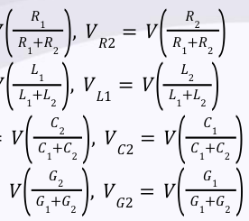
𝑅 [] 𝑉 𝑅1 = 𝑉 𝐿 [] 𝑉 𝐿1 = 𝑉 𝐶 [] 𝑉 𝐶1 = 𝑉 𝐺 [] 𝑉 𝐺1 = 𝑉
→ For Parallel connected elements only.
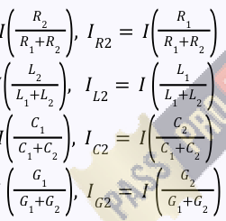
𝑅 [] 𝐼 𝑅1 = 𝐼 𝐿 [] 𝐼 𝐿1 = 𝐼 𝐶 [] 𝐼 𝐶1 = 𝐼 𝐺 [] 𝐼 𝐺1 = 𝐼
Nodal Analysis
Applicable to both planar & Non-planner networks. No. of equation =n-1
Mesh Analysis
Applicable only to planar network No. of independent loop (l) = b – n + 1.
Here, b = branches & n = Nodes.
Points to remember:
Source transformation is only applied to Practical Sources.
Above circuit diagram are equivalent in respect with performance, the only
difference in connection. This technique is also applicable to dependent sources, but it should be
kept in mind that dependent variable lies outside that branch (where source transformation is applied)
| DELTA to STAR | STAR to DELTA |
|---|---|
| [𝑅 ] 𝑅 𝑅 𝑅 = 𝑎 𝑐 , 1 𝑅 +𝑅+𝑅 𝑎 𝑏 𝑐 | 𝑅 𝑅 𝑅 = 𝑅 + 𝑅 + 1 2 𝑎 1 2 𝑅 3 |
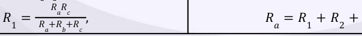
| 𝑅 𝑅 𝑅 = 𝑎 𝑏 , 2 𝑅 +𝑅+𝑅 𝑎 𝑏 𝑐 𝑅𝑅 𝑅 = 𝑐 𝑏 3 𝑅 +𝑅+𝑅 𝑎 𝑏 𝑐 | 𝑅 𝑅 𝑅 = 𝑅 + 𝑅 + 2 3 𝑏 2 3 𝑅 1 𝑅 𝑅 𝑅 = 𝑅 + 𝑅 + 1 3 𝑐 1 3 𝑅 2 |
|---|---|
| 𝐿 𝐿 𝐿 𝐿 [𝐿 ] 𝐿 = 𝑎 𝑐 , 𝐿 = 𝑎 𝑏 1 𝐿 +𝐿+𝐿 2 𝐿 +𝐿+𝐿 𝑎 𝑏 𝑐 𝑎 𝑏 𝑐 | 𝐿 𝐿 [𝐿 ] 𝐿 = 𝐿 + 𝐿 + 1 2 𝑎 1 2 𝐿 3 |
| 1 . 1 1 . 1 1 𝐶 𝐶 1 𝐶 𝑐 [𝐶 ] = 𝑎 𝑐 , = 𝑎 𝑏 𝑐 𝐶1 + 𝐶1 + 𝐶1 𝐶 𝐶1 + 𝑐1+ 𝑐1 1 2 𝑎 𝑏 𝑐 𝑎 𝑏 𝑐 | 1 . 1 1 1 1 𝐶 𝐶 [𝐶 ] = + + 1 2 𝐶 𝐶 𝐶 1 𝑎 1 2 𝐶 3 |
| 1 . 1 1 . 1 1 𝐺 𝐺 1 𝐺 𝐺 [𝐺 ] = 𝑎 𝑐 , = 𝑎 𝑏 𝐺 𝐺1 + 𝐺1 + 𝐺1 𝐺 𝐺1 + 𝐺1 + 𝐺1 1 2 𝑎 𝑏 𝑐 𝑎 𝑏 𝑎 | 1 . 1 1 1 1 𝐺 𝐺 [𝐺 ] = + + 1 2 𝐺 𝐺 𝐺 1 𝑎 1 2 𝐺 3 |
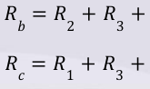
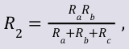
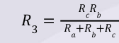
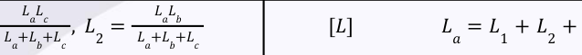
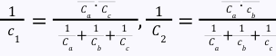
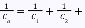
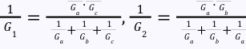
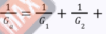